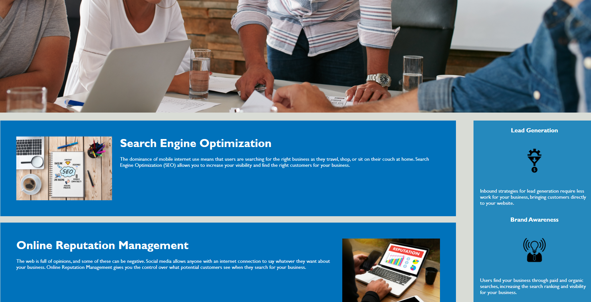

Horiseon Code Refactor
In this project, I refactored the main page to conform with accessiblity guidelines

See my Work
Here is a collection of my work, with the latest completed project is listed first:
In this project, I refactored the main page to conform with accessiblity guidelines

In this project, I will make a password generator?
In this project, I will code some sort of quiz
In this project, I will make a day planner or something
In this project, apparantely I'll be making a weather dashboard
I am currently seeking employment, feel free to reach out if you believe I am a good fit
I've always been a curious person, and I have a strong love of learning new things, which is what brought me to the field of web development. Although my professional path has taken some wild turns - most notably with the discovery that I am trans - I am now on track to pursue my dream career of developing attractive and interactive websites. I am currently pursuing my education at UC Berkeley where I am learning web development at a greatly accelerated pace.
Resume placeholder